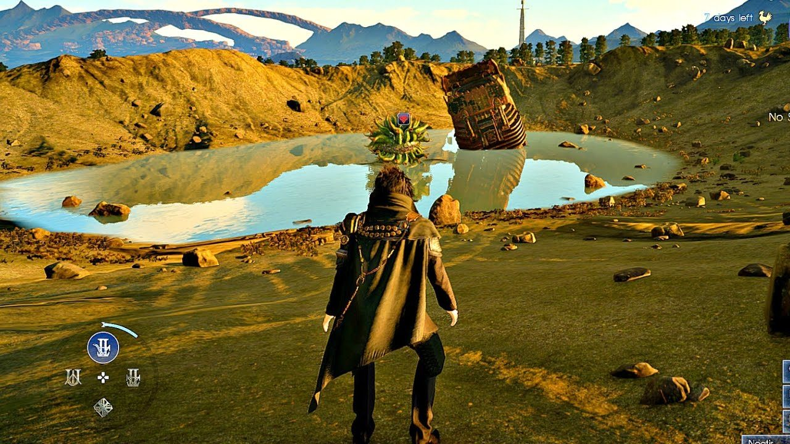
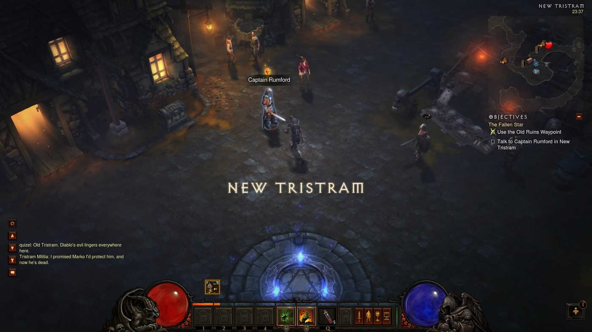
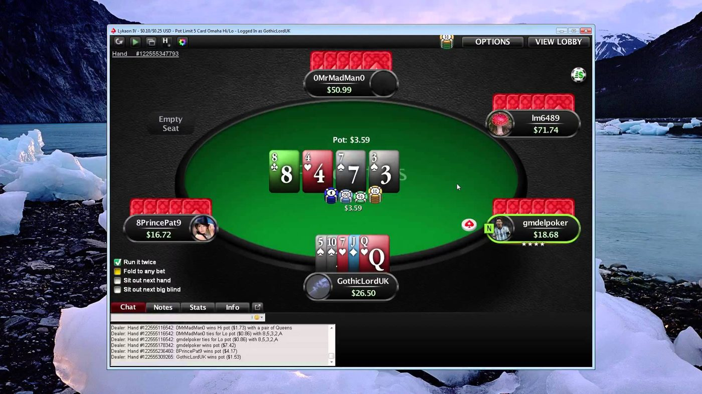
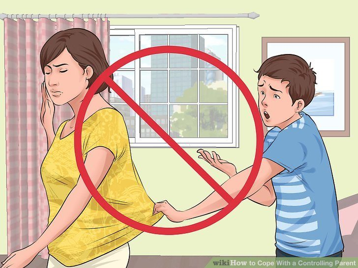
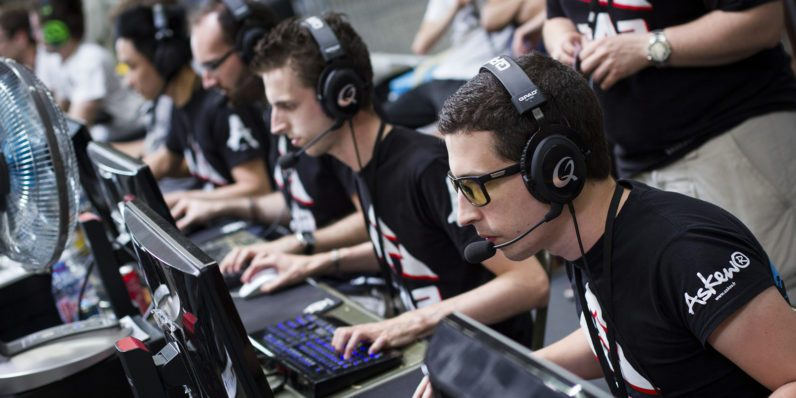
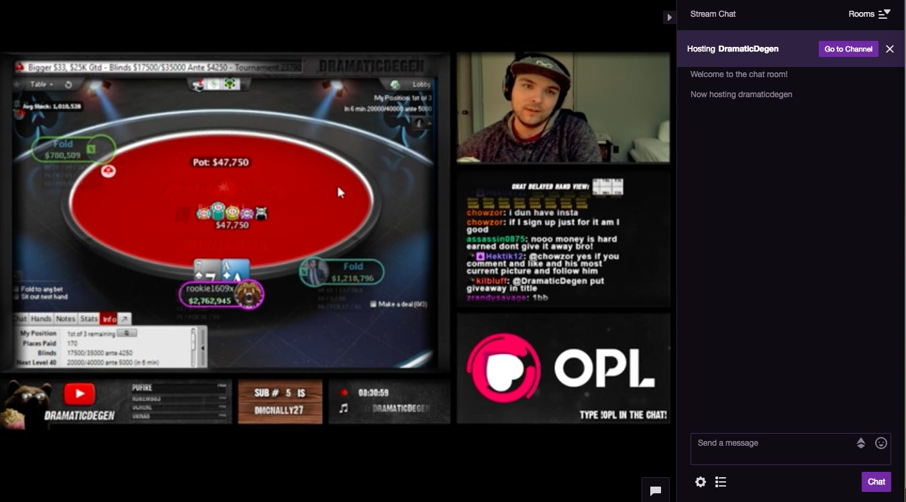
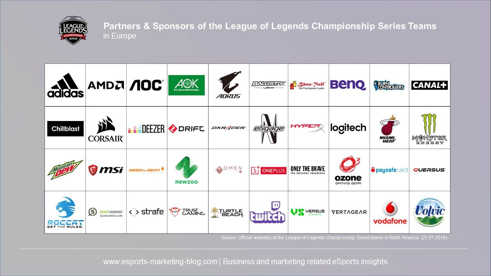
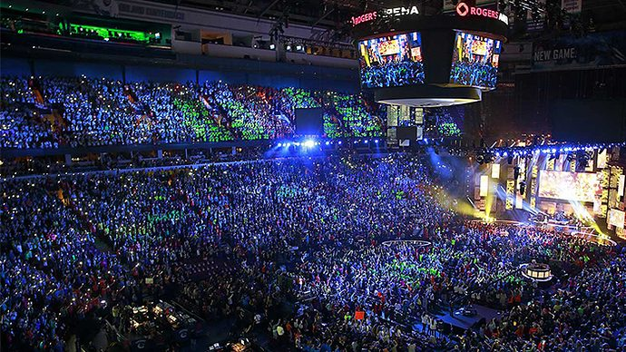

Introduction
Technology is having a substantial impact on our lives in the 21st century, especially now that it is commonly being used in professional environments. One of the reasons the younger generations have such a good grip on technology is because of video games. Video gaming is a window into the internet and technological world by potentially providing the much-needed practice on electronic devices. If you go about gaming in the right way, you can really built up a strong skill set for your career.
Types Of Video Games

1. Role Playing Games: Diablo Trilogy, Grand Theft Auto, Path of Exile, Grim Dawn.
2. Real Time Strategy Games: Age of Empires I & II, Dawn of War, Starcraft, Red Alert 2.
3. First Person Shooters: PUBG, Call of Duty, Fortnite, Overwatch.
4. Massively Multiplayer Online Role-Playing Game (MMORPG): World of Warcraft, 5. Guild Wars 2, The Elder Scrolls Online, Rift, Runescape.
6. Multiplayer Online Battle Arena: League of Legends, Dota 2, Heroes of Newerth.

Other Online Games
7. Card Games: Poker, Magic, Legends of Norrath, Shadowverse.
8. Board Games: Chess, Go, Monopoly, Payday, Clue/Cluedo.

Issues With Trying To Go Pro
Issues with gaming can start when some gamers disregard an alternative career and solely try to be become a pro in a chosen game. Their game most likely already has an oversaturated competition, resulting in them failing unless they are a prodigy of some kind. The issues with trying to go directly pro in video games is that the demand is very low, and the talent required is very high. Professional gaming has an extremely competitive scene. It is comparable to popular professional sports like basketball and soccer.
Parents Disapproval Of Video Games

Parents’ concerns with video games may be 50% warranted, but 50% unnecessary. Specifically, there are many controversial views towards video games that contain violence. There is evidence to suggest that playing violent video games increase the chance of the player being aggressive in real life, which supposedly leads to violent behavior. However, none of the evidence is consistent enough to be remotely conclusive. The tendency for many people (especially the older generations) is to hear one study and say violent video games are completely bad, ignoring potential counter-evidence. Luckily, much of study’s evidence in the last 10 years shows a very weak correlation between real-life violence and players of violent video games. With any study, there are always outside variables that are hard to control that are outside of the study’s scope, having an unknown effect on the outcome.
Direct Benefits Of Playing

Studies have shown that video game players have better hand-eye coordination (on average) when compared with non-video game players. Video games have also shown to facilitate in problem-solving and possibly enhancing lateral thinking capacity.
Ways To Success:
Commentating
Commentating is a skill on its own. Have a listen to how much enthusiasm Toby Wan puts behind his commentating in the 2016 Dota 2 World Championship with “It’s a Disastah!”.
Anything that is remotely competitive becomes even more fascinating when commentating is added. Viewers will stay engaged in a sport that they would otherwise be bored with, simply because the commentator charms them into the game - they may not even know the game rules! Commentating is a very realistic career in the eSports world if you think you have the charisma for it. It may be much easier to succeed in commentating compared to becoming a professional in the same game. Even outside of eSports, commentating is a fantastic skill set to have.
News Reporting
There are probably hundreds of thousands of interviews on YouTube now with professional gamers. Interviewing professional gamers from around the world requires a certain amount of understanding about the game (although less than commentating). You don’t want to be that oblivious interviewer who doesn’t know what’s going on : P.
Streaming
Streaming is another skill that is going to give you some serious real-life skills outside the game you are playing. If you start a stream on Twitch there are many skills that you can learn. You can learn broadcasting software, managing your audience, peak traffic hours, subscriptions, social media advertising, and marketing. You can do all of these at the same time you are building your Twitch following. Even if your stream fails, you will be left with a set of hard skills that you can apply in other fields. Ideally, you are learning all of these skills while benefiting from the logical thinking that comes from playing a strategic game (most games at least have some strategy).

Sponsorships
You can see a table of the main League of Legends sponsors below.

If you have incredible content or gaming skills it may be enough for one of these giant brands to give you a paid contract and possibly even plane tickets.
Dota 2’s The International 2018 event is currently running. It is being broadcasted with hundreds of thousands of viewers. There are numerous websites tracking the schedules and game data and hundreds of live streams being broadcasted through Twitch and YouTube - and its main event has not even started. The market is huge for a game like this, there are endless ways to learn, collaborate and profit.

Conclusion
Playing video games with a primary goal of building real-life skills can be a fantastic way to spend your time. The same applies to poker players. With the broadcasting platforms available today and the current audience of poker, there is no reason you cannot expand past simply playing cards.